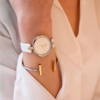

Як правильно обрати ліжко?
При виборі ліжка в інтернет магазині Вам в першу чергу потрібно вибрати матеріал. Найбільшою популярністю користуються дерев'яні ліжка, виготовлені з вільхи, ясена чи дуба. Такі моделі чудово прикрасять Вашу спальню у квартирі чи приватному будинку. Для орендованих квартир, під здачу, більше підійде ліжко з металу, так як воно просто «не вбивається», а також має дуже демократичну ціну. Для Вашої зручності ліжко може комплектуватись висувними ящиками або підйомним механізмом. Ящики можуть бути з одного боку ліжка або з двох. Також є моделі, з висувними ящиками спереду. Ліжка з підйомним механізмом, це відмінне рішення, для невеликих кімнат, вони дозволяють заощадити простір і мають велику нішу для зберігання постільної білизни. Всі дерев'яні ліжка комплектуються буковими ламелями. Спальне місце з ламельною основою може витримувати навантаження до 150 кг на одне спальне місце. Відстань між ламелями, у своїй має бути 2,5-3 див.
Оформлення вітальні. Які м'які меблі краще вибрати?

Вітальня – це основна кімната у кожному будинку. Саме вона служить для прийому гостей, проведення часу всією сім'єю та просто для відпочинку у приємній теплій атмосфері. Оформляючи свій будинок та вітальню зокрема, всі намагаються зробити її максимально зручною, комфортною та красивою. Основним та центральним елементом оформлення вітальні, як і будь-якої іншої кімнати, є м'які меблі.
Будь-які меблі для вітальні повинні бути не тільки стильними і красивими, але і функціональними. На таких меблів має бути зручно та приємно відпочивати та приймати гостей. Однак сьогодні існує величезна різноманітність найрізноманітніших м'яких меблів для вітальні, яка підходить для кімнат різних розмірів і форм. На чому варто зупинити свій вибір? Як краще оформити свою вітальню, щоб вам було комфортно, а гості хотіли приходити до вас знову та знову?
На сайті інтернет магазину Кровато представлено велику різноманітність м'яких меблів для вітальні, серед яких кожен зможе вибрати для себе найбільш вдалий варіант. У нас ви знайдете:
- Прямі дивани. Такі дивани вважаються класикою. Вони підходять для віталень будь-яких форм та розмірів. Прямий диван виглядає стильно та лаконічно, на ньому зручно відпочивати, приймати гостей або навіть спати. Прямі дивани можуть стояти біля стіни, так і в центрі кімнати. Багато моделей прямих диванів легко розкладаються, перетворюючись на повноцінне спальне місце. Також більшість диванів мають великі та місткі ніші, які є додатковим місцем для зберігання;
- Кутові дивани Кутові дивани вважаються найзручнішими та комфортнішими. Вони ідеально підійдуть для приємного проведення часу в колі сім'ї або друзів. Кутові дивани в основному використовуються для оформлення великих віталень, так як вони займають багато місця, і для кімнат з невеликою площею просто не підійдуть;
- Тахти. Тахта - це одна з варіацій дивана, але стильніша і мінімалістична. Виглядають тахти дуже незвично і можуть підійти для будь-якого інтер'єру. Також тахти більше ніж звичайні дивани підходять для сну, оскільки в їх основі не пружинні блоки, а дерев'яні ламелі або ортопедичні матраци;
- Крісла. Крісло – це особливий предмет інтер'єру. Сучасні дизайнери не часто використовують його, вважаючи застарілим, проте саме крісла створюють особливий затишок та комфорт у будь-якій кімнаті. Сьогодні існує величезна різноманітність класичних та сучасних моделей крісел, що дозволяє кожному відшукати ідеальне крісло для свого будинку;
- Набір меблів. Комплект м'яких меблів – це відмінне рішення для тих, хто хоче меблювати свою вітальню не лише диваном, а й кріслами. Існують набори з одним або двома кріслами, із прямими або кутовими диванами. Основна перевага будь-якого готового меблевого гарнітура – це те, що предмети меблів у ньому ідеально поєднуються один з одним, і вам не потрібно буде витрачати свій час та сили на їхній підбір.
Підбір м'яких меблів для вітальні – це заняття непросте. Однак при виборі та покупці меблів для своєї вітальні пам'ятайте, що якісні м'які меблі повинні бути не тільки красивими, але й зручними для вас і всіх мешканців вашого будинку.
krovato це
-

Власне виробництво
Також у нас є своє виробництво, завдяки чому ми можемо виготовити меблі безпосередньо за Вашими побажаннями: нестандартний розмір, висота, виготовлення меблів за Вашим ескізом. Ліжка, тумби, комоди, шафи - все це ми можемо доопрацювати за Вашим бажанням.
-
Професіонали
Наші вироби виготовлені на професійному обладнанні з ясена, вільхи, бука, дуба, металу та ДСП. Фабрики із закритим циклом виробництва – контроль якості кожному етапі: від завезення дерева в цех до складання ліжка в клієнта.
-
Великий вибір
На нашому сайті Ви легко зможете підібрати собі спальню, вітальню або дитячу кімнату "під ключ". Величезний вибір матраців, ліжок, а також тумбочок та комодів чекають на Вас.
-
Контроль якості
Наші досвідчені менеджери, з радістю допоможуть підібрати Вам меблі, які Вас радуватимуть довгі роки. Завдяки власній службі доставки та збирання, ми підтримуємо контроль якості від виробництва до клієнта.
follow products and discounts on instagram
-

-

- 
-

Explore exciting subjects, & play your way to brilliance
Why settle for ordinary when you can explore the extraordinary? Join us and discover why EduPlay is not just the best – it's the magical key to unlocking creativity for your kids.
🎓 Explore our subjectsabout me
Welcome to the cinematic realm of Jimmy, where creativity meets technology to craft visually stunning narratives. With a passion for storytelling and a keen eye for detail, I embark on a journey to transform ordinary footage into extraordinary visual experiences.